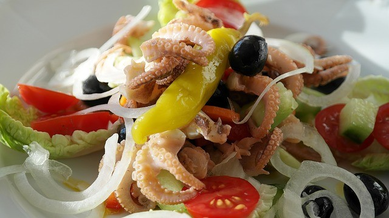
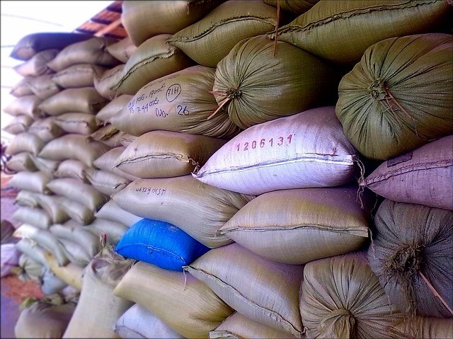
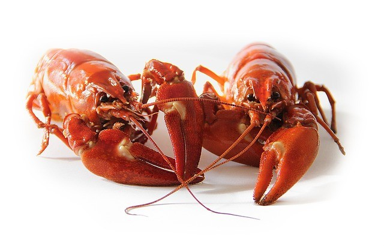
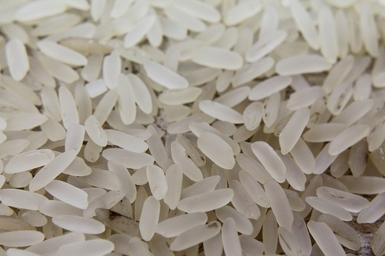
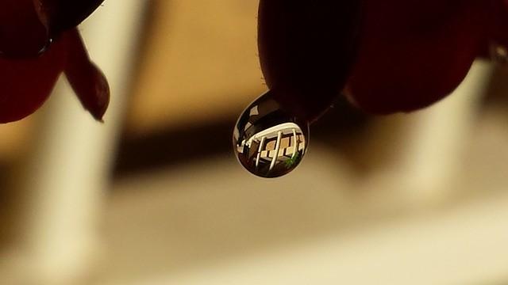
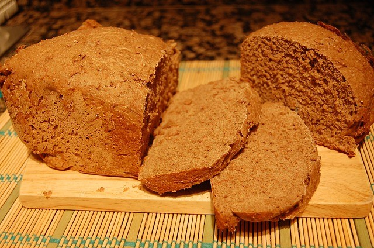
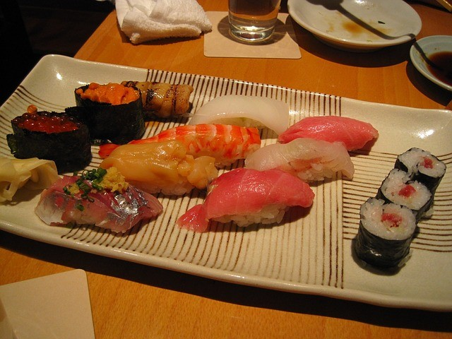

Guía de cómo usar contadores para contar en japonés: Parte 1
El idioma japonés tiene estas expresiones difíciles conocidas como "contadores". El problema con los contadores es que ciertas cosas tienen ciertos "contadores" específicos que se utilizan para contarlas. Por ejemplo, para contar "un perro", dices "Ippiki" (一匹), que se refiere a un pequeño animal. Existen un montón de contadores y la gente, a veces incluso los japoneses, tienen problemas para recordar que contador se usa con qué objeto (es por eso que hay unos contadores más "generales" a los que puedes recurrir si los necesitas).
Este video ilustra de manera muy graciosa lo que les estoy comentando.
Como pueden ver los contadores son un lío para aprenderlos (pero aún así no es una tarea imposible). Después de que hayas aprendido los contadores japoneses más básicos, termina siendo la experiencia la que te permitirá usarlos correctamente.
He aquí mi primer artículo sobre la guía de contadores en japonés, donde traté de reunir la mayoría de contadores relacionados con comida, comestibles y animales. Espero sean de ayuda.
1. 杯 · は い (Contador para tazas llenas, pulpos y calamares)

Este contador se usa para objetos como: Zouni (plato de sopa de año nuevo que contiene mochi), soba, pulpo, calamar, arreglo floral, arroz con té vertido encima (chazuke), donburi, cóctel, cangrejo, barco, cuando es hora de beber, whisky amargo, comida, Ramen,
2. 束 · そ く (Contador para lotes/bultos)

Espárragos, planta de arroz, soba, leña, plántulas, cebollin, cebolla, cebolla verde, cuerdas, Konbu, fideos, palo de incienso.
3. 丁 · ち ょ う (Contador para porciones de alimentos)
Soba, udon, tofu y ramen.
4. 匹 · ひ き (Contador para animales pequeños)
Sepia, calamar, perro, conejo, vaca, anguila, erizo de mar, caballo, gambas, camarones, langosta, lobos, mosquito, crustáceos, gusanos de seda, ranas, ostra, caracol, cangrejo, tortuga, pulpo, Animal , libélula y nutria de mar
5. 頭 · と う (Contador para animales grandes)
Elefante, razas grandes de perro, perro guía, delfín, vaca, caballo, gusano de seda, monstruo, ballena, oso, peluche grande, gorila, mono, camello, nutria de mar y burro.
6. 帖 · じ ょ う (Contador para unidades de papel y de alga marina)
Álbum, cuaderno, alga marina, papel para escribir en japonesa, pantalla desplegable.
7. 羽 · わ (Contador para aves y conejos)
Avestruz, conejo, grulla de origami, pájaro, pavo real
8. 尾 · び (Contador para los pescados)

Pescado, camarones, gambas, cangrejo. En ciertos casos no aplica para el atún, ya que como vieron en el video, dependiendo de su estado el contador cambia.
9. 俵 · た わ ら (Contador para sacos de arroz)

Arroz
10. 掬 · き く (Contador para cucharadas de agua)

Lágrimas
11.. 剤 · ざ い (Contador para dosis)

Medicina
12. 錠 · じ ょ う (Contador para píldoras)
Medicina
13. 斤 · き ん (Contador para barras de pan)

Pan simple, pan blanco, hogaza.
14. 貫 · か ん (Contador para Nigiri Sushi)

Como su nombre lo indica sirve para contar Nigiri Sushi y además, sushi.
15. 品 · ひ ん, し な (Contador para cursos de comida)
Cocina, Sashimi y si, para contar cursos de comida aunque no lo creas.
16. 把 · わ (Contador para paquetes)
Por último, este contador se usa para contar paquetes de soba, leña, fideos y palos de Incienso.
Como pudieron leer, los contadores son todo un mundo aparte y extraño en el que nos sumergimos al estudiar japonés. Si quieren agregar ejemplos, observaciones o sugerencias, pueden dejarme un comentario. Éxitos en su estudio del japonés! Nos vemos.
Tomado de TF
Ilustración principal por Anna García
Artículos Relacionados

Guía de estudio para el JLPT N4: Kanji

Guía de estudio para el JLPT N5: Adjetivos na parte 1